תעלומה בשכונה

לילה שקט בשכונה. לפתע, שלושה ילדים שמים לב שמשהו מוזר מתרחש...
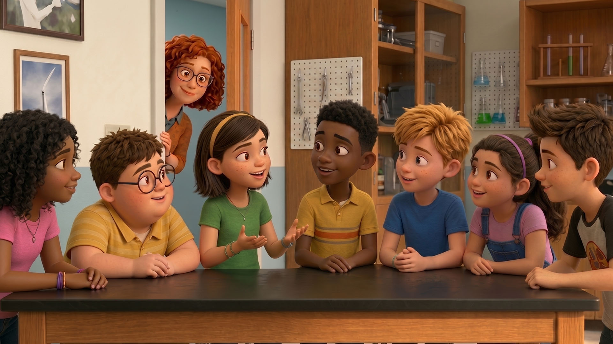
למחרת, רונית המורה נכנסת לכיתה ומבינה שכולם מדברים בהתלהבות על התופעה המוזרה שקרתה אמש. היא מחליטה שזו הזדמנות לחקור יחד.
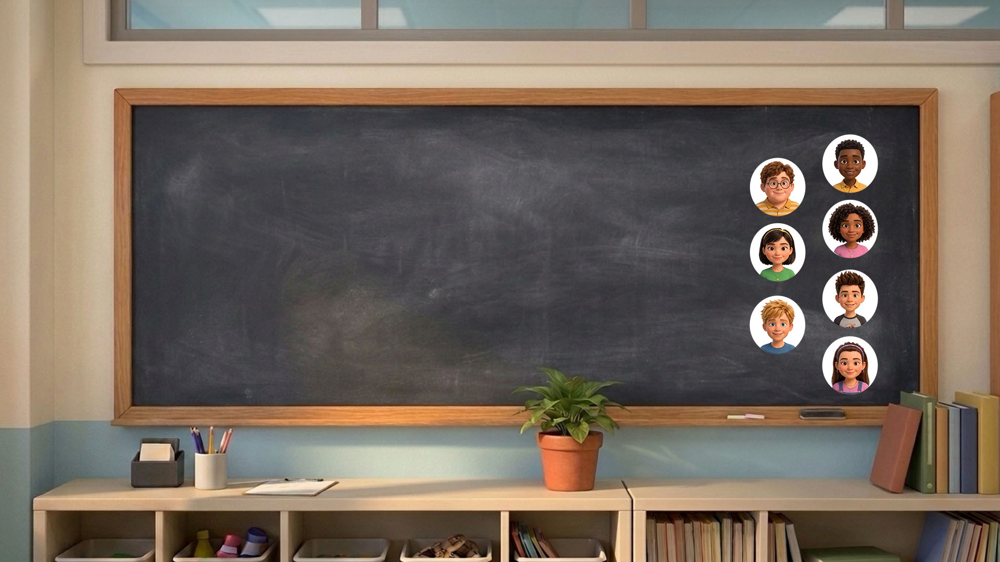
לחצו על תמונות התלמידים והתלמידות וגלו מה היו הרעיונות שלהם.
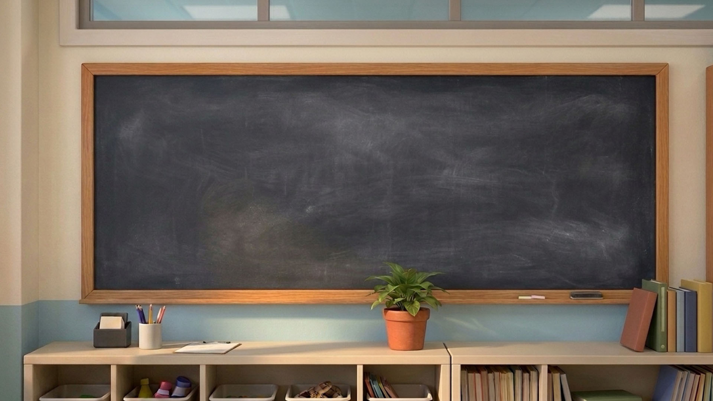

שאלה 1
| רעיון | מדעי | לא מדעי |
|---|---|---|
| א. נורה שמתחממת יתר על המידה | ||
| ב. חיבור רופף של חוטי החשמל | ||
| ג. חייזרים ששולחים סימנים | ||
| ד. סערת ברקים שמשפיעה על רשת החשמל | ||
| ה. מגנט חזק שהוצב במרכז השכונה | ||
| ו. רוח רפאים חשמלית שמסתובבת בשכונה ומשחקת עם מפסקים | ||
| ז. חשמל סטטי שיוצר ניצוצות | ||
רונית המורה מחלקת את הכיתה לשלוש קבוצות חקר. כל קבוצה תאסוף ראיות (נתונים) על אחת ההשערות:
קבוצה א' – ברקים.
קבוצה ב' – התחממות הנורות.
קבוצה ג' – חיבור רופף בארון החשמל.
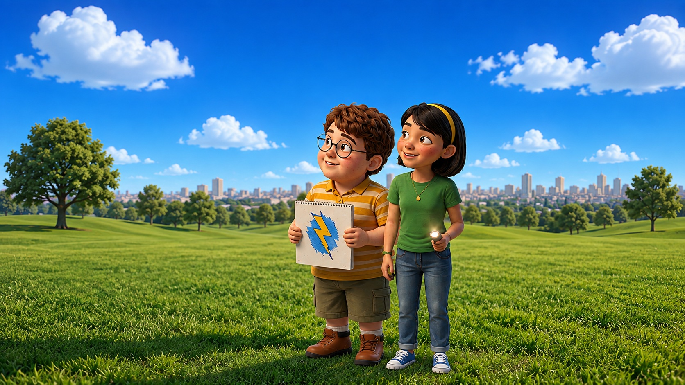
קבוצה א' חקרה את ההשערה שברקים גורמים לאורות להבהב. אלה הנתונים שאספה:
השמיים היו בהירים לחלוטין, לא נשמע רעם, ואפליקציית מזג האוויר הראתה שאין סיכוי לגשם באזור:
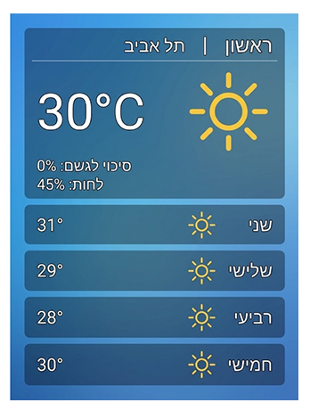
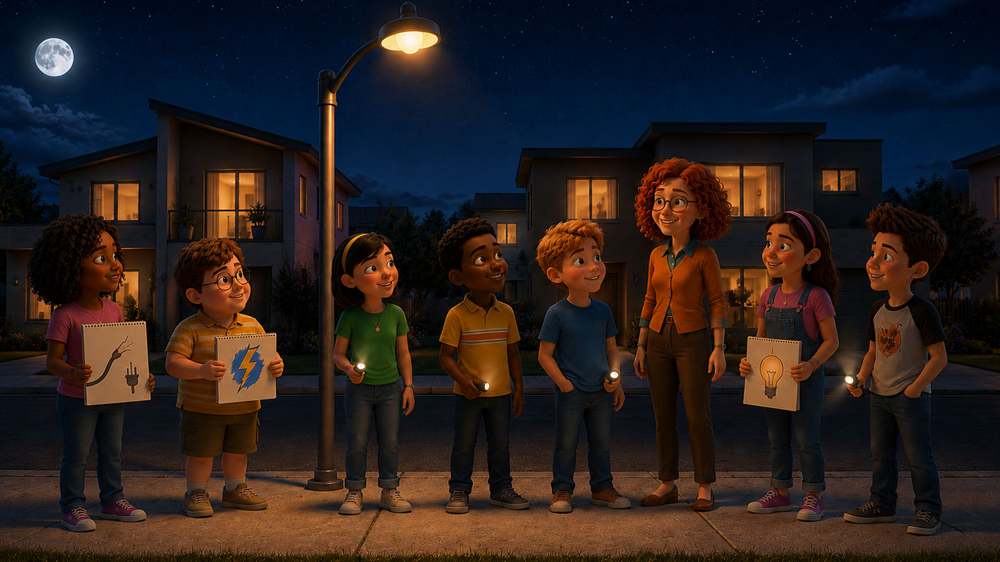
שאלה 2
סמנו את התשובה הנכונה.
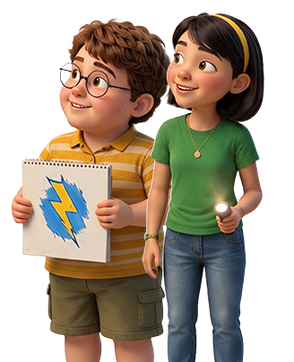
קבוצה ב' חקרה את ההשערה כי ההתחממות של הנורות גרמה להבהובים.
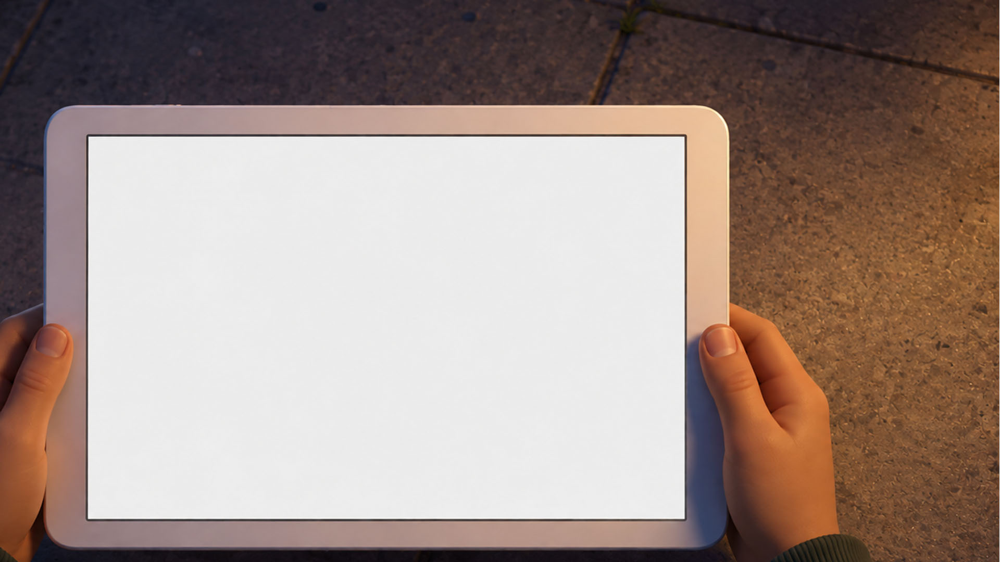
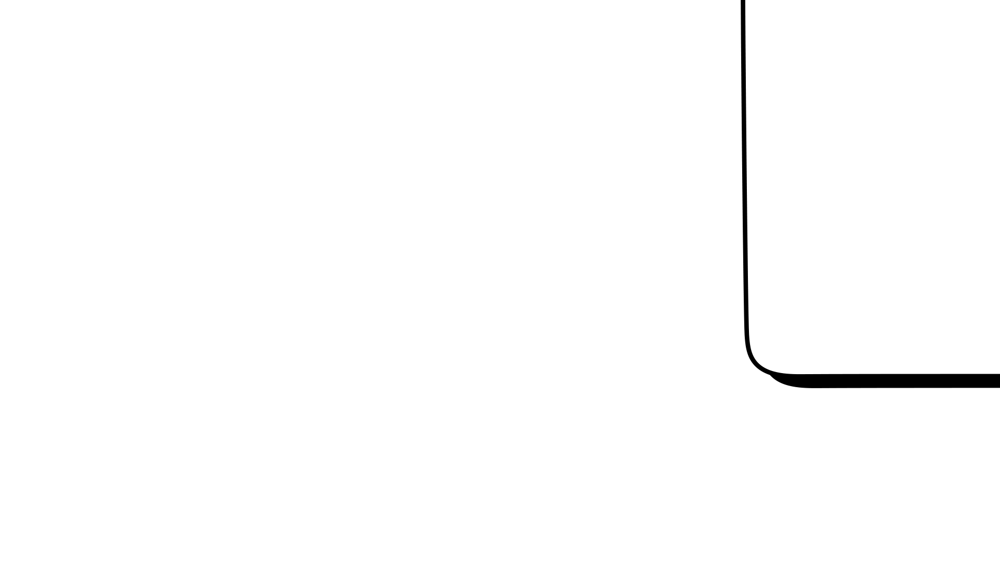
- עקבו אחרי מצב הנורה: האם היא דולקת או כבויה?
- שימו לב: מה קורה לטמפרטורה של הנורה?
- המשיכו לעקוב אחר השתנות הטמפרטורה עד שהנורה נכבית.
- לאחר שהנורה נכבית, המשיכו לעקוב אחר שינויי הטמפרטורה.
- עקבו אחר מצב הנורה: האם היא דולקת או כבויה?
- הפעילו מחדש את הסימולציה כדי לראות שוב את התהליך.
שאלה 3.א
סמנו את התשובה הנכונה.
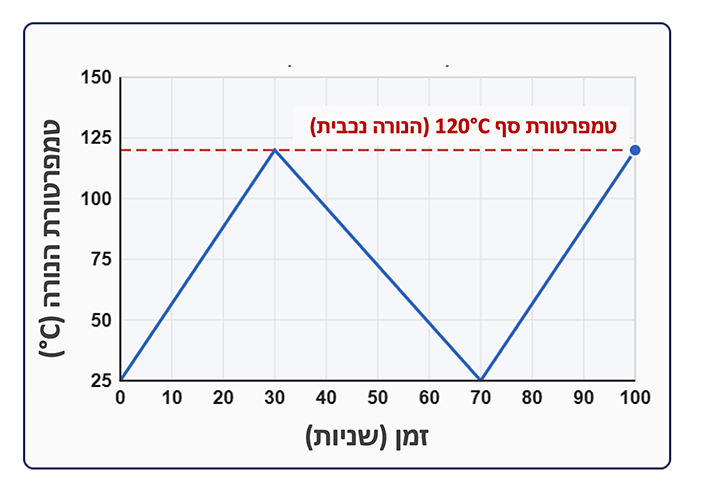
שאלה 3.ב
סמנו את התשובה הנכונה.
שאלה 3.ג
סמנו את התשובה הנכונה.
שאלה 3.ד
סמנו את ההמשך הנכון של המשפט: הבהוב האורות ביישוב נגרם בגלל...
לאחר ששתי קבוצות החקר הראשונות אספו ראיות, קבוצה ג' יצאה עם חשמלאית מוסמכת לבדוק אם חיבור רופף במעגל החשמלי הוא הגורם להבהוב האורות.
בלוח החשמל שלפניכם יש חיבורים תקינים וחיבורים רופפים. התבוננו בהתנהגות הנורות ונסו לזהות את החיבורים הבעייתיים.
1. זהו אילו נורות מהבהבות.
2. לחצו על מספרי החיבורים (1–5).
3. בדקו האם החיבור תקין או רופף (היעזרו במד זרם).
שאלה 4.א
סמנו את כל התשובות הנכונות.
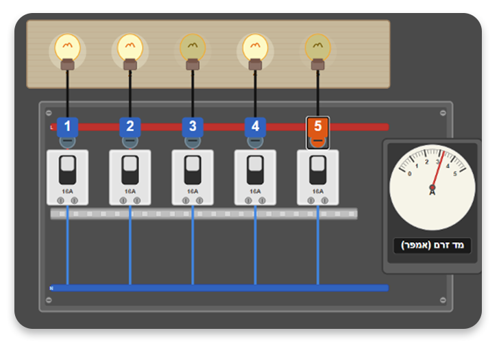
שאלה 4.ב
סמנו את ההמשך הנכון של המשפט: הנורה מהבהבת, כי חיבור רופף גורם...
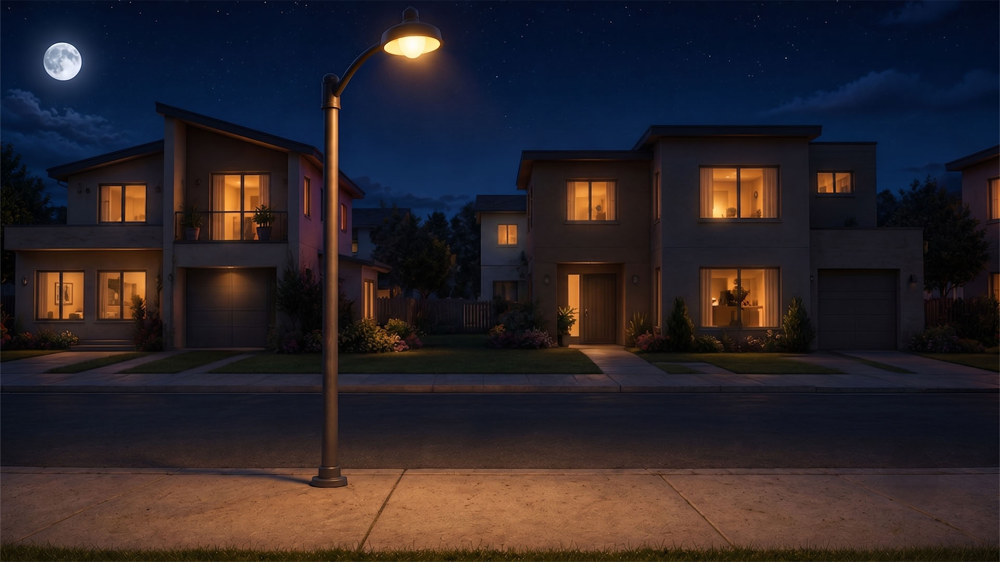
שלוש הקבוצות סיימו את חקירתן והעבירו למורה רונית את הממצאים.
לחצו על הכרטיסייה של כל קבוצה כדי לצפות בהם:
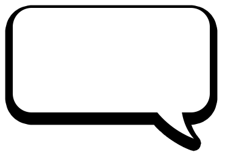
מצוין, עכשיו אנחנו יודעים מה גרם להבהובי האורות. נמשיך לחקור בכדי להשלים את התמונה.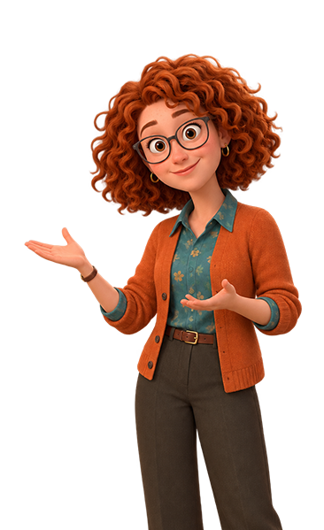
שאלה 5
סמנו את כל התשובות הנכונות.
שאלה 6
סמנו את התשובה הנכונה.
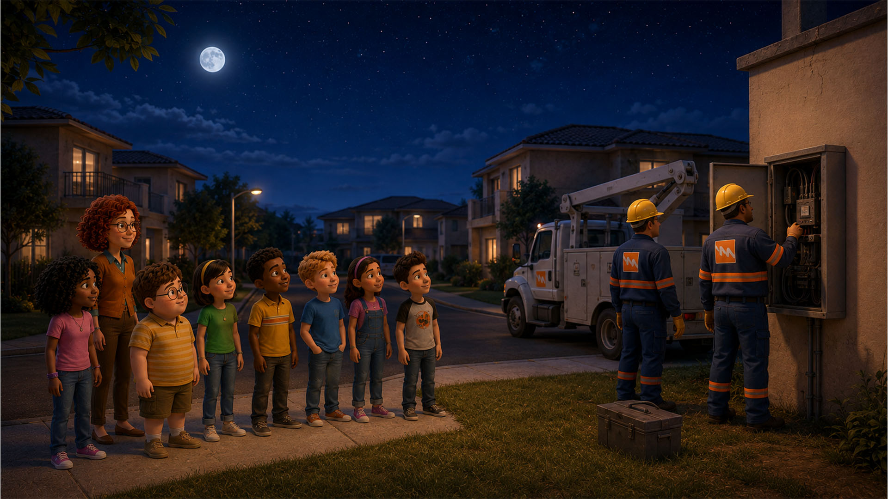
השכנים מדווחים לחברת החשמל על החיבור הרופף וצוותי החברה מתחילים לטפל בתקלה.
רונית המורה אוספת את התלמידים ומציעה שמחר בכיתה יסכמו את תהליך החקר שעברו ויחשבו יחד מה אפשר ללמוד ממנו.
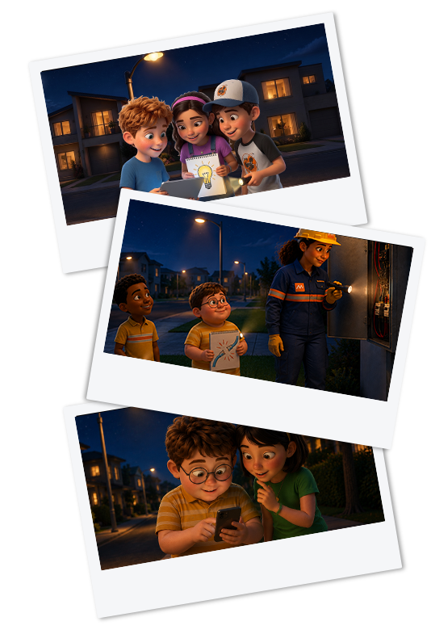
שאלה 7
שאלה 8
שאלה 9
סמנו את התשובה הנכונה.
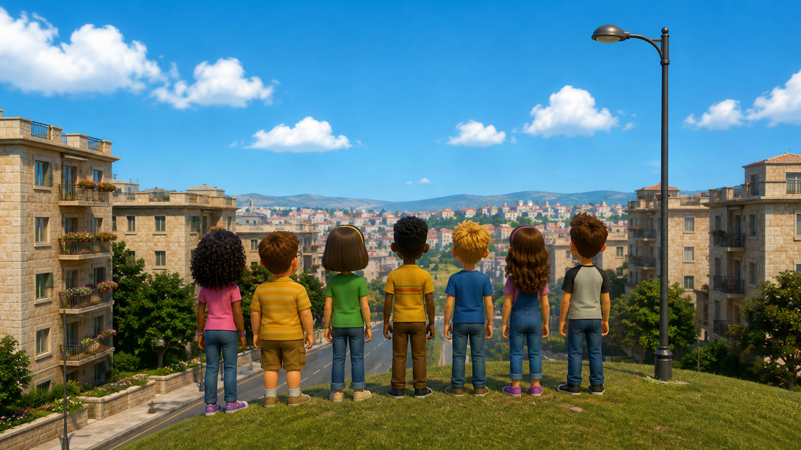
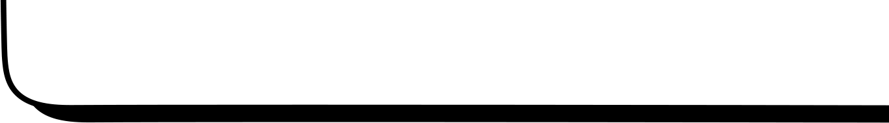
בסיום השיעור, הילדים עולים שוב אל הגבעה שממנה הכול התחיל. הם מביטים בשכונה ומבינים שהפעם הם לא רק פתרו תעלומה, אלא גם למדו דרך חדשה לחקור את העולם.